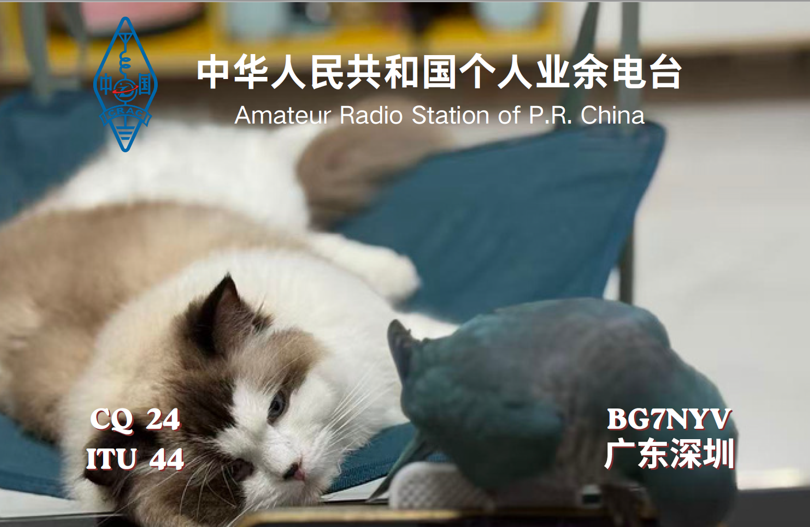

📬 QSL 卡片交换 / QSL Info

- 📧 QSL 专用邮箱：13075248486@163.com
- 📡 常用通联：FM 模式，梧桐山中继、南山链路
- 💱 交换规则：接受直寄 QSL 卡片，建议附上回邮费用或国际回邮券
- ℹ️ 说明：本人新取得呼号，QSL 卡片将分批寄出，敬请谅解

From Shenzhen, Guangdong, China
CQ Zone: 24 | ITU Zone: 44 | Grid: OL72
业余无线电操作证书
中文：大家好，我是庄凯焕，呼号 BG7NYV，常驻深圳宝安区。日常主要使用 VHF/UHF FM 模式通联，常用梧桐山中继、南山链路。欢迎各地HAM空中相遇，愉快通联！
English：Hello, I'm Zhuang Kaihuan, callsign BG7NYV based in Shenzhen. I operate mainly on VHF/UHF FM via Wutongshan Repeater and Nanshan Link. Nice to meet you on the air!
收件地址：深圳市宝安区西乡街道大铲湾前海铂寓2栋806
邮政编码：518102
QRZ 档案：https://qrz.com/db/BG7NYV